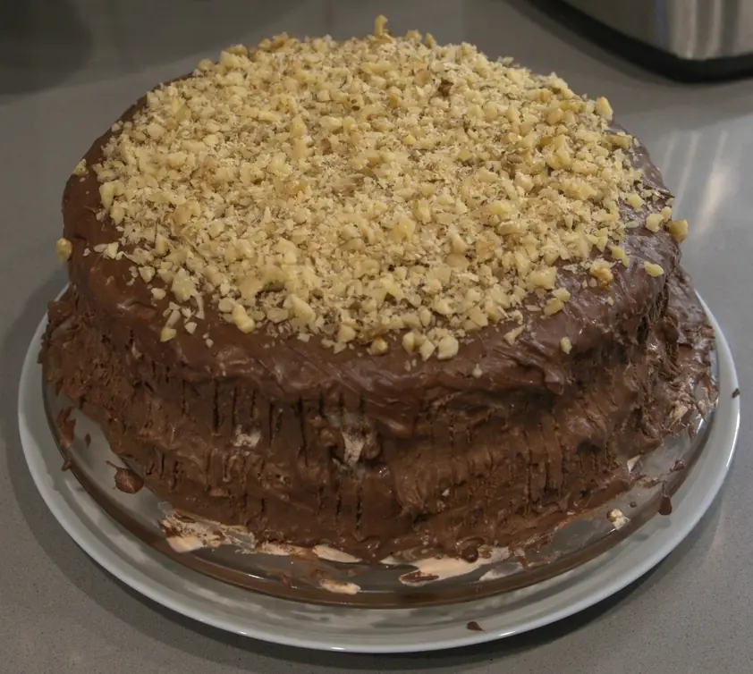
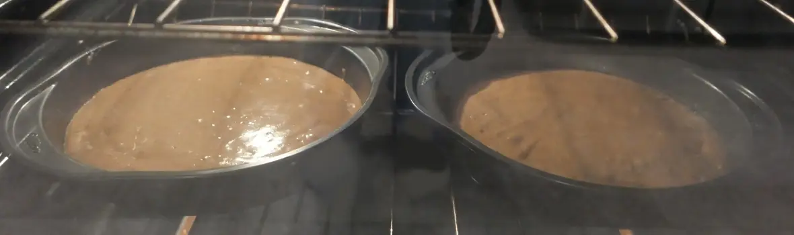
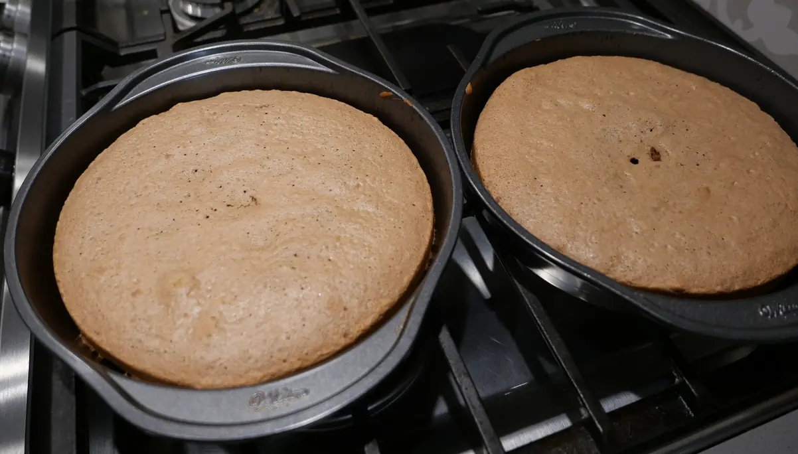
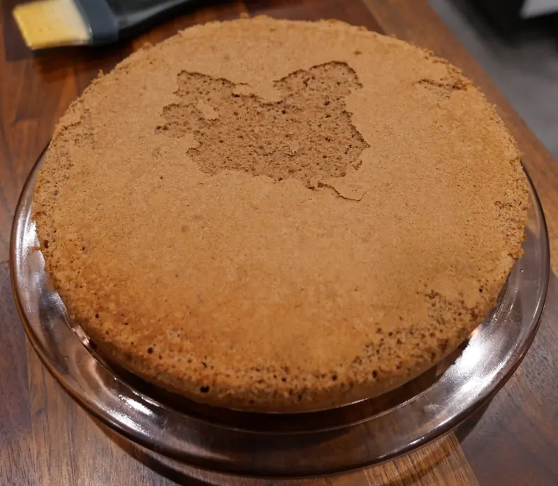
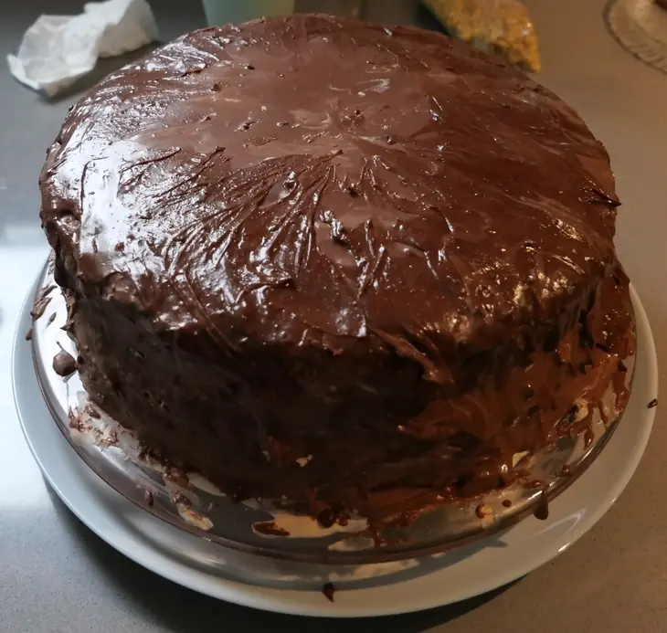
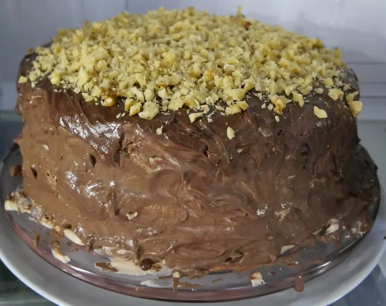
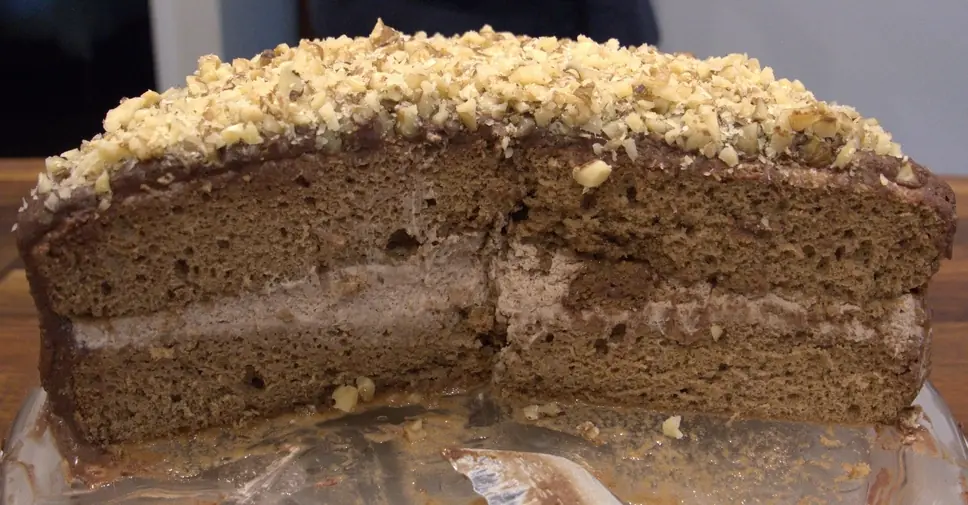

Yule Log Layer Cake (Yule Stump) Recipe
Hello!
I enjoyed my Christmas. I took a little break from programming to spend time with family, and bake sweets!
This year, I wanted to bake a Yule Log, but the whole rolling process felt too fussy, and I wanted the sponge cake and whipped cream filling to be more flavorful without just turning it into a chocolate cake.
So I decided to take a standard Yule Log recipe from Sally's Baking Addiction and modify it! I added cinnamon and nutmeg to the sponge cake, peppermint extract to the whipped cream, and assembled it all as a standard layer cake!
It turned out very well, and I plan to bake it every Christmas from now on!
I'll outline the modifications I made in the rest of this post. Keep in mind that this isn't a complete recipe, just a list of modifications I made to the recipe linked above.
- Generously spray two 9 by 1.5 inch round cake pans with baking spray.
- Add a 1/2 teaspoon each of cinnamon and nutmeg to the sponge cake dry ingredients.
- Pour the finished sponge cake batter into the two cake pans. The batter will be thick, so spread it to the edges of the pan using a spatula. 
- For the whipped cream: replace the 2 tablespoons of frangelico liqueur listed in the recipe with 1 teaspoon of peppermint extract. This will give the whipped cream an intense peppermint flavor, which I enjoy. There will be extra whipped cream.
- Once the sponge cakes have finished baking, immediately invert the two cake layers onto two pieces of parchment paper to cool. 
- Once the sponge cakes have cooled, use the parchment paper to slide one layer onto a cake plate, spread as much whipped cream as you can on top (I think I did about 1 cup), then top with the second cake layer. Chill in the fridge for 20 minutes to be safe, then spread a thin layer of whipped cream around the top and sides as a crumb coat. Refridgerate for at least 30 minutes. 
- Once the cake has chilled enough, place the cake plate on top of a wider plate to catch any drips, then pour the ganache over top of the cake, letting it drip down the sides and cover the entire cake. If the ganache thickened too much in the fridge, warm and stir it until pourable. If you poured the ganache while it was still a bit too thick to drip down over the sides, use an offset spatula or a small spoon to spread the ganache over the cake; the ganache will blend with the whipped cream crumb coat a bit, but this will create an interesting texture. 
- Sprinkle a 1/2 cup of chopped nuts (I used walnuts, the recipe calls for hazelnuts) on top of the cake to create the appearance of a tree stump. 
- Refridgerate the cake until the ganache along the sides has thickened. Gently run a fork down the sides of the cake to make lines resembling tree bark.
- Serve and enjoy. 
Next year, I might experiment with some other modifications, such as increasing the spice in the sponge cake to 1 teaspoon of cinnamon and a 1/2 teaspoon of nutmeg, and spreading the sponge cake batter across three cake pans instead of two (to have more surface area to use up more whipped cream).